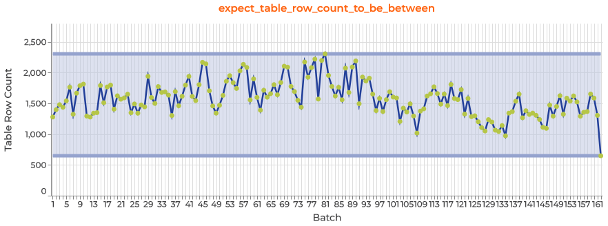
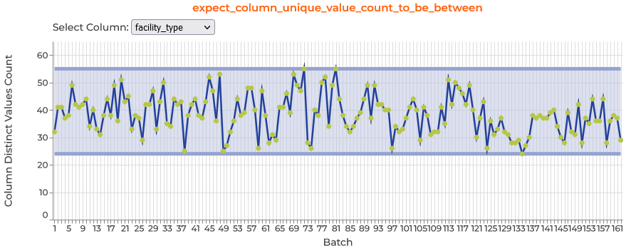
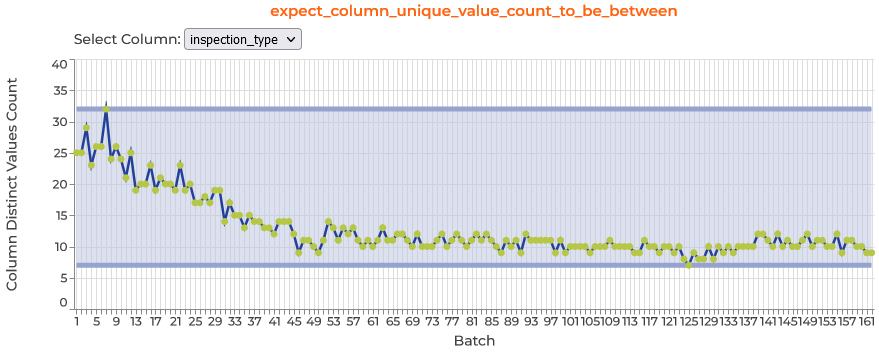
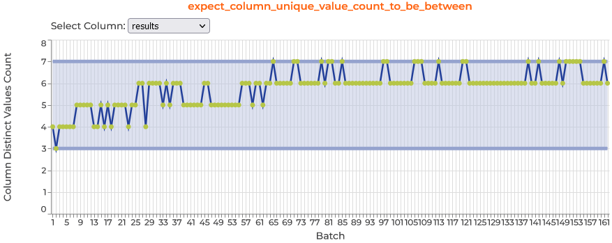

Great Expectations (or GX for short) is an open-source Python-based library that brings the idea of “testing” to your data. It enables you to define expectations for properties of your datasets (like records per batch, distribution of values in a column, columns in a table, etc) and check that the data meets those expectations when the data is updated.
Workflow Overview
The high-level great_expectations workflow follows this pattern:
In this post, I’ll demonstrate this workflow with local-file-based DataAssets in a local filesystem DataContext (although great_expectations also works with SQL-based and cloud-bucket-based DataAssets).
Sample Data Collection and Preparation
Many data pipelines process data in discrete, periodic batches. I’m going to simulate that situation by downloading a dataset, splitting it into 1-month batches (based on a datetime-like column), and then write each of those 1-month batches to file. I’m going to use the Food Inspection dataset on Chicago’s public data portal.
Step 0: Great Expectations Setup
First, you’ll need to install the great_expectations. If you already have conda installed on your machine, you can easily set up a conda env just like the one used to run this notebook by: 1. copying the gx_env_environment.yml file in the same dir as this notebook file to your machine, 2. open a terminal and navigate to the dir with that new file, and 3. run command conda env create -f environment.yml
Collecting and preprocessing sample data for this post
PROJECT_DATA_DIR.mkdir(exist_ok=True)# First, we need to download the data to our local machine.url ="https://data.cityofchicago.org/api/geospatial/4ijn-s7e5?method=export&format=GeoJSON"full_file_path = PROJECT_DATA_DIR.joinpath("full_food_inspections.geojson")ifnot full_file_path.is_file(): urlretrieve(url=url, filename=full_file_path)food_inspection_gdf = gpd.read_file(full_file_path)# For some reason, Socrata adds on these four always-null location columns on# to geospatial exports. I'm going to remove them.location_cols = ["location_state", "location_zip", "location_address", "location_city"]# uncomment the lines below to confirm those columns are always empty# print("Rows with a non-null value in these location_xxx columns:")# display(food_inspection_gdf[location_cols].notnull().sum())food_inspection_gdf = food_inspection_gdf.drop(columns=location_cols)# That column ordering is a bit chaotic, so I'll reorder them (for readability).col_order = ["inspection_id", "inspection_date", "dba_name", "aka_name", "license_", "facility_type","risk", "inspection_type", "results", "address", "city", "state", "zip", "violations","longitude", "latitude", "geometry"]food_inspection_gdf = food_inspection_gdf[col_order].copy()# I also want to break this into batches based on the dates, so I need to cast# the `inspection_date` to a datetime type.food_inspection_gdf["inspection_date"] = pd.to_datetime( food_inspection_gdf["inspection_date"])# I'll also cast string and numeric features to their proper dtypes.# food_inspection_gdf = food_inspection_gdf.convert_dtypes()food_inspection_gdf["inspection_id"] = food_inspection_gdf["inspection_id"].astype("Int64")food_inspection_gdf["longitude"] = food_inspection_gdf["longitude"].astype(float)food_inspection_gdf["latitude"] = food_inspection_gdf["latitude"].astype(float)# I'll also just make all string uppercase (to reduce cardinality)str_cols =list(food_inspection_gdf.head(2).select_dtypes(include="object").columns)food_inspection_gdf[str_cols] = food_inspection_gdf[str_cols].apply(lambda x: x.str.upper())
In the (folded up) cell below, we split the dataset into batches and write each batch to file in this post’s ./data directory.
And here we split the dataset into batches and write each batch to file in this post’s ./data directory.
# I want to split the data into 1-month batches, so I need to get the first day of the month# for every month between the earliest inspection and the month after the latest inspection# in our food inspection dataset.month_start_dates = pd.date_range( start=food_inspection_gdf["inspection_date"].min() + pd.DateOffset(months=-1), end=food_inspection_gdf["inspection_date"].max(), freq="MS",)# Here, we'll iterate through each of those month_start_dates, extract the batch of data,# format a filename containing the month_start_date, and write the batch to file.for month_start_date in month_start_dates: batch_period = pd.to_datetime(month_start_date).strftime("%Y_%m") batch_data = food_inspection_gdf.loc[ food_inspection_gdf["inspection_date"].between( left=month_start_date, right=month_start_date + pd.DateOffset(months=1), inclusive="left") ].copy() batch_file_path = PROJECT_DATA_DIR.joinpath(f"food_inspection_batch_{batch_period}.parquet")ifnot batch_file_path.is_file(): batch_data.to_parquet(batch_file_path, index=False)
Step 1: Create or Load Great Expectations DataContext
A DataContext is your primary tool for configuring your project and accessing project resources or GX methods. When you first create a DataContext for your project, GX will create a directory named /great_expectations in the project_root_dir directory.
The code below will create a new DataContext if one doesn’t already exist in the PROJECT_DIR directory, and then load a DataContext instance from that PROJECT_DIR.
import great_expectations as gxfrom great_expectations.data_context import FileDataContextcontext = FileDataContext.create(project_root_dir=PROJECT_DIR)
This tutorial uses a local FileDataContext, but GX also supports CloudDataContexts and EphemeralDataContexts.
Kinds of DataContexts
[el for el indir(gx.data_context) if el.endswith("Context")]
A GX Datasource connects you to a source of data and gives you methods to define and access DataAssets.
The code below will check the DataContextcontext for a Datasource with the given datasource_name, and either load or create a local filesystem Datasource instance.
datasource_name ="food_inspection_datasource"ifany(el["name"] == datasource_name for el in context.list_datasources()):print(f"Datasource with name '{datasource_name}' found; loading now") datasource = context.get_datasource(datasource_name)else:print(f"No Datasource with name '{datasource_name}' found; creating now") datasource = context.sources.add_pandas_filesystem( name=datasource_name, base_directory=PROJECT_DATA_DIR )
No Datasource with name 'food_inspection_datasource' found; creating now
Other kinds of GX Datasources
[el for el indir(context.sources) if el.startswith("add_") and"_update_"notin el]
A GX DataAsset specifies a collection of records in a Datasource and the method for accessing those records.
The code below checks if a DataAsset with the given name exists in the datasource, loading it if it exists, or specifying it if not. In the part that specifies the DataAsset, note that we set the name of the asset, specify that the data is in parquet files, and provide a regex pattern for the file_names and also defines variable-names for the year and month parts each file_name. We can use those year and month variables to specify how DataAssets should be split into batches and the order of those batches.
A GX Expectation is a verifiable assertion about some property of a DataAsset, and defining Expectations both enables GX to check that data meets expectations and enables domain experts to explicitly represent and communicate Expectations for data.
GX supports hundreds of different Expectations and catalogs them in the Expectation Gallery (although not all Expectations are implemented for all kinds of Datasources). GX also provides tools to aid in several workflows for defining suites of Expectations, including the GX Data Assistant workflow (used below), which builds a suite of Expectations by profiling batches of data.
In the code below, we create a new Expectation suite (on lines 3-5), organize batches of data (on lines 6-7), and use the data assistant to profile the DataAsset based on our batches of data (on lines 8-11).
62 Expectations produced, 9 Expectation and Metric plots implemented
Use DataAssistantResult.show_expectations_by_domain_type() or
DataAssistantResult.show_expectations_by_expectation_type() to show all produced Expectations
Data Assistant Plot Inspector plots
After the Data Assistant finishes profiling, it outputs results to a variable we named data_assistant_result, and you can explore the results across batches by calling data_assistant_result.plot_expectations_and_metrics() and selecting the expectation and column you’re interested in.
   
Extracting, [optionally] Editing, and Committing our Expectation Suite to our DataContext
If we’re content with the Expectations generated by the Data Assistant’s profiler, we can simply extract the Expectations and add them to our context via
In a future post I’ll go into further depth on methods for editing Expectations, but here I’ll show how to inspect and remove Expectations.
expectation_suite = data_assistant_result.get_expectation_suite( expectation_suite_name=expectation_suite_name)expecs = expectation_suite.get_grouped_and_ordered_expectations_by_expectation_type()Counter([ex._expectation_type for ex in expecs])
Signature:
expectation_suite.find_expectation_indexes(
expectation_configuration:'Optional[ExpectationConfiguration]'=None,
match_type:'str'='domain',
ge_cloud_id:'Optional[str]'=None,)->'List[int]'Docstring:
Find indexes of Expectations matching the given ExpectationConfiguration on the given match_type.
If a ge_cloud_id is provided, match_type is ignored and only indexes of Expectations
with matching ge_cloud_id are returned.
Args:
expectation_configuration: A potentially incomplete (partial) Expectation Configuration to match against to
find the index of any matching Expectation Configurations on the suite.
match_type: This determines what kwargs to use when matching. Options are 'domain' to match based
on the data evaluated by that expectation, 'success' to match based on all configuration parameters
that influence whether an expectation succeeds based on a given batch of data, and 'runtime' to match
based on all configuration parameters
ge_cloud_id: Great Expectations Cloud id
Returns: A list of indexes of matching ExpectationConfiguration
Raises:
InvalidExpectationConfigurationError
File: ~/miniconda3/envs/gx_env/lib/python3.10/site-packages/great_expectations/core/expectation_suite.py
Type: method
Code
?expectation_suite.remove_expectation
Signature:
expectation_suite.remove_expectation(
expectation_configuration:'Optional[ExpectationConfiguration]'=None,
match_type:'str'='domain',
remove_multiple_matches:'bool'=False,
ge_cloud_id:'Optional[Union[str, uuid.UUID]]'=None,)->'List[ExpectationConfiguration]'Docstring:
--Public API--Remove an ExpectationConfiguration from the ExpectationSuite.
Args:
expectation_configuration: A potentially incomplete (partial) Expectation Configuration to match against.
match_type: This determines what kwargs to use when matching. Options are 'domain' to match based
on the data evaluated by that expectation, 'success' to match based on all configuration parameters
that influence whether an expectation succeeds based on a given batch of data, and 'runtime' to match
based on all configuration parameters.
remove_multiple_matches: If True, will remove multiple matching expectations.
ge_cloud_id: Great Expectations Cloud id for an Expectation.
Returns:
The list of deleted ExpectationConfigurations.
Raises:
TypeError: Must provide either expectation_configuration or ge_cloud_id.
ValueError: No match or multiple matches found (and remove_multiple_matches=False).
File: ~/miniconda3/envs/gx_env/lib/python3.10/site-packages/great_expectations/core/expectation_suite.py
Type: method
Signature:
expectation_suite.remove_all_expectations_of_type(
expectation_types:'Union[List[str], str]',)->'List[ExpectationConfiguration]'Docstring: <no docstring>
Source:def remove_all_expectations_of_type(
self, expectation_types: Union[List[str], str])-> List[ExpectationConfiguration]:if isinstance(expectation_types, str):
expectation_types =[expectation_types]
removed_expectations =[
expectation
for expectation in self.expectations
if expectation.expectation_type in expectation_types
]
self.expectations =[
expectation
for expectation in self.expectations
if expectation.expectation_type notin expectation_types
]return removed_expectations
File: ~/miniconda3/envs/gx_env/lib/python3.10/site-packages/great_expectations/core/expectation_suite.py
Type: method
Code
??expectation_suite.add_expectation
Signature:
expectation_suite.add_expectation(
expectation_configuration:'ExpectationConfiguration',
send_usage_event:'bool'=True,
match_type:'str'='domain',
overwrite_existing:'bool'=True,)->'ExpectationConfiguration'Docstring:
--Public API--Upsert specified ExpectationConfiguration into this ExpectationSuite.
Args:
expectation_configuration: The ExpectationConfiguration to add or update.
send_usage_event: Whether to send a usage_statistics event. When called through ExpectationSuite class'
public add_expectation() method, this is set to `True`.
match_type: The criteria used to determine whether the Suite already has an ExpectationConfiguration
and so whether we should add or replace.
overwrite_existing: If the expectation already exists, this will overwrite if True and raise an error if
False.
Returns:
The ExpectationConfiguration to add or replace.
Raises:
ValueError: More than one match
DataContextError: One match if overwrite_existing = False
# noqa: DAR402
Source:@public_api
def add_expectation(
self,
expectation_configuration: ExpectationConfiguration,
send_usage_event: bool =True,
match_type: str ="domain",
overwrite_existing: bool =True,)-> ExpectationConfiguration:"""Upsert specified ExpectationConfiguration into this ExpectationSuite. Args: expectation_configuration: The ExpectationConfiguration to add or update. send_usage_event: Whether to send a usage_statistics event. When called through ExpectationSuite class' public add_expectation() method, this is set to `True`. match_type: The criteria used to determine whether the Suite already has an ExpectationConfiguration and so whether we should add or replace. overwrite_existing: If the expectation already exists, this will overwrite if True and raise an error if False. Returns: The ExpectationConfiguration to add or replace. Raises: ValueError: More than one match DataContextError: One match if overwrite_existing = False # noqa: DAR402 """
self._validate_expectation_configuration_before_adding(
expectation_configuration
)return self._add_expectation(
expectation_configuration=expectation_configuration,
send_usage_event=send_usage_event,
match_type=match_type,
overwrite_existing=overwrite_existing,)File: ~/miniconda3/envs/gx_env/lib/python3.10/site-packages/great_expectations/core/expectation_suite.py
Type: method
Code
??expectation_suite.replace_expectation
Signature:
expectation_suite.replace_expectation(
new_expectation_configuration:'Union[ExpectationConfiguration, dict]',
existing_expectation_configuration:'Optional[ExpectationConfiguration]'=None,
match_type:'str'='domain',
ge_cloud_id:'Optional[str]'=None,)->'None'Source:def replace_expectation(
self,
new_expectation_configuration: Union[ExpectationConfiguration, dict],
existing_expectation_configuration: Optional[ExpectationConfiguration]=None,
match_type: str ="domain",
ge_cloud_id: Optional[str]=None,)->None:""" Find Expectations matching the given ExpectationConfiguration on the given match_type. If a ge_cloud_id is provided, match_type is ignored and only Expectations with matching ge_cloud_id are returned. Args: expectation_configuration: A potentially incomplete (partial) Expectation Configuration to match against to find the index of any matching Expectation Configurations on the suite. match_type: This determines what kwargs to use when matching. Options are 'domain' to match based on the data evaluated by that expectation, 'success' to match based on all configuration parameters that influence whether an expectation succeeds based on a given batch of data, and 'runtime' to match based on all configuration parameters ge_cloud_id: Great Expectations Cloud id Returns: A list of matching ExpectationConfigurations """if existing_expectation_configuration isNoneand ge_cloud_id isNone:raise TypeError("Must provide either existing_expectation_configuration or ge_cloud_id")if isinstance(new_expectation_configuration, dict):
new_expectation_configuration = expectationConfigurationSchema.load(
new_expectation_configuration
)
found_expectation_indexes = self.find_expectation_indexes(
existing_expectation_configuration, match_type, ge_cloud_id
)if len(found_expectation_indexes)>1:raise ValueError("More than one matching expectation was found. Please be more specific with your search ""criteria")elif len(found_expectation_indexes)==0:raise ValueError("No matching Expectation was found.")
self.expectations[found_expectation_indexes[0]]= new_expectation_configuration # type: ignore[assignment]File: ~/miniconda3/envs/gx_env/lib/python3.10/site-packages/great_expectations/core/expectation_suite.py
Type: method
After reviewing and editing Expectations, the Expectation Suite must be committed to the DataContext.